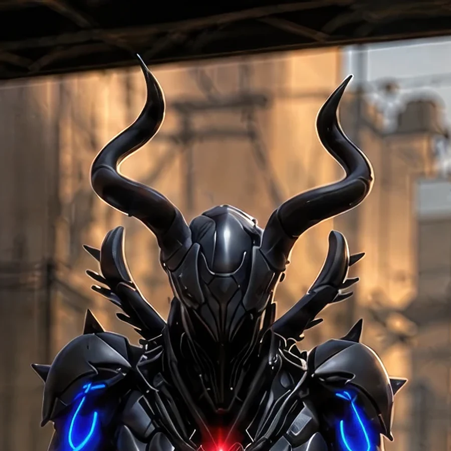
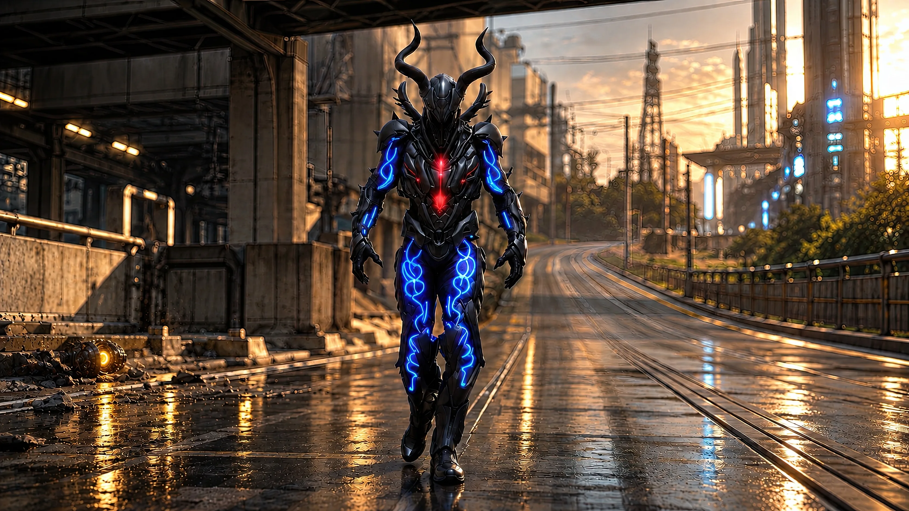
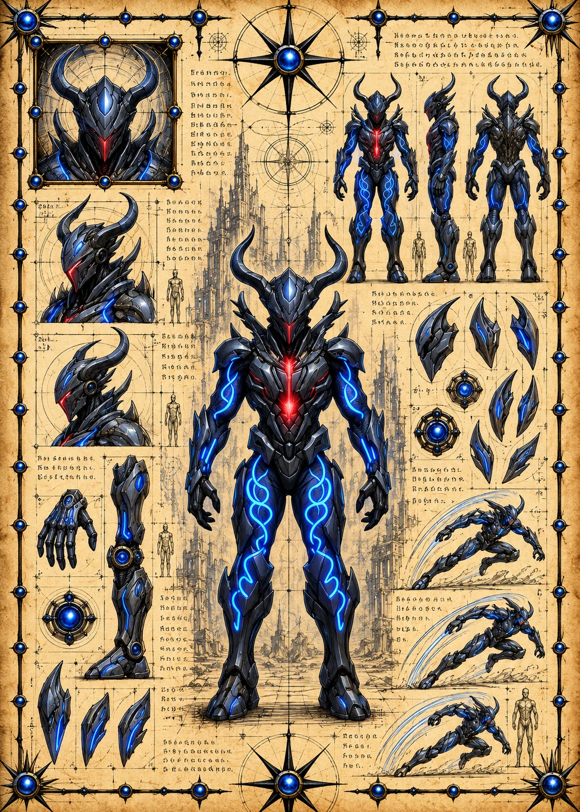

Field Observation
Otheon left a hostile yellow alien module glowing subtly on equipment at the lower left. The module converts Earth 1 equipment into concealed Synthbot infrastructure.
 ©
©
GENEZYS ARCHIVE · EARTH 1 · Synthbot
Condemned Oracle
Identity & combat record
Archive node 01 / 05

Archive record
Otheon once saw how this war ends, and the Accord has never forgiven it for what it saw. The Condemned Oracle draws every attack upon itself and turns the pain back on whoever dares to strike. Fate, Otheon insists, is only a coil waiting to be twisted.
Combat signature
Twists fate unpredictably: Gets taunt for 1 round. Reflects 170 damage to the attacker until the taunt lasts.
Genezys 02:09 ™&©2026LEGIONS
Recovered visual record
Archive node 02 / 05

Full frame available // rotate device to landscape
Technical archive
Archive node 03 / 05

Classified field intelligence
Archive node 04 / 05
FIELD REPORT // COVERT HOSTILE MODULE
Field Observation
Otheon left a hostile yellow alien module glowing subtly on equipment at the lower left. The module converts Earth 1 equipment into concealed Synthbot infrastructure.
Environment
Object Analysis
Key Findings
Motion archive
Archive node 05 / 05
Motion record not yet recovered